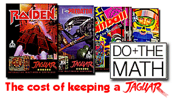

|

Jaguar
software, or lack of it, is just one factor in
the eventual demise of the system, and marked the end of Atari
Corporation in the Summer of 1996. It is well recognised that the
Atari Jaguar was a powerful video console system, but even before it was
released the press, developers and potential publishers all promoted
caution about the company behind it. We take a brief look at the
Jaguar's birth to death timeline, and look at some new evidence that
right up until the end, Atari were at least, putting it's limited
budgets where it mattered, into software development.
Atari were recognised rightly or
wrongly, as a company that released great hardware but without the
proper support. That support mainly referred to advertising, and
making consumers aware of their products. Nobody could really
criticise the Jaguar from a hardware point of view (although the press
ensured people were confused over the 64-bit moniker), but when it came
to pushing the system 100%, many people in the industry only had to look
back at the Lynx versus Gameboy as a prime example of Atari product
support.
1992 - Atari was pinning it's future on the Jaguar 64-Bit Multimedia
Entertainment System - it had to be successful or the company would be
in trouble. It wasn't a secret, it was fact. From the
very start of the Jaguar becoming the companies flag ship product, Atari
changed it's ways. It began to court the developers and publishers
in a completely "new" way, being open and available to the entertainment
software industry. This began to
show promise, with Atari announcing companies "signing up" as developers
for the new Jaguar system (some signed up with a "wait and see" proviso), and this was even before any hardware had
been released. The behind the scenes work was baring fruit,
and the PR bandwagon was rolling along nicely.
1993 - Atari were getting the positive press
- the hardware was getting great previews and the software industry were
quietly saying that Atari "could" actually be on a winner with the new
Jaguar console. When the system launched, it couldn't be made
quick enough for the initial demand, and within three months the IBM
assembled Jaguar supply chain began to stutter and some of the early
software reviews made mediocre reading.
1995 - Two years down the road, with sales
sliding and competition from Sony, Nintendo and Sega beginning to bite,
the Jaguar wasn't doing what was needed for Atari, and the signs weren't
good. The combination of fierce competition, lack of quality software and
comparatively tiny marketing budgets didn't bode well for the future of
the Jaguar and more importantly, Atari Corporation.
While many blame Atari and it's management
directly for the lack of success with the Jaguar, there are many outside
factors which all combine to the eventual failure. During 1995 Atari still
pumped money into the platform, even though the bottom line figures made
depressing reading. The Atari Historical Society has come across
documents which show the monetary commitment made during 1995 to Jaguar
software development, and this excludes R&D spend on the exciting
peripherals such as the VR system, Modem adaptors and the Jaguar 2 system
which was still in development that year.
Sam Tramiel had a heart attack in 1995, and
Jack came in later that year to take his place at the helm. There
is no doubting Sam was very committed to the Jaguar, and Atari - but
Jack took a sober assessment of the company while Sam was
recuperating and realised that unless a miracle happened, the Jaguar
would simply drain the company dry and it would collapse.
Although a last ditch effort was made converting Atari games to the PC
(and possibly other platforms) under the "Atari Interactive" brand,
Atari would soon bow out of the industry through a reverse merger in 1996 with JTS, a
manufacturer of portable hard drives.
So what was the cost for Atari to keep a
Jaguar? Without doubt, Atari tried to make the platform a success,
and with hindsight it is easy to point the blame and point out the
mistakes. Atari had few options towards the end, and the Jaguar
was the last stop cafe at the end of a rough journey.
Take a look at these development costs
discovered recently and decide for yourself if Atari was committed to the Jaguar, or
if it was simply throwing money away and hoping for the best?
|